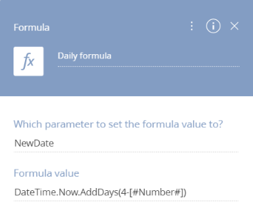
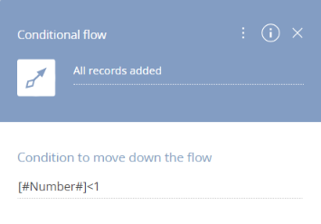
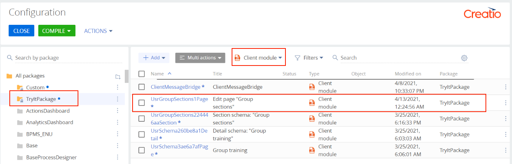

На предыдущем шаге мы добавили к странице проверку соответствия текущего количества активных ежедневных секций количеству залов для групповых занятий.
Теперь реализуем автоматическое заполнение расписания групповых занятий — добавим на страницу действие, которое будет добавлять в расписание 4 новых записи.
Для этого создадим бизнес-процесс, который будет записывать в таблицу базы данных необходимые данные и возвращать в схему страницы сообщение о том, что записи добавлены.
Создать бизнес-процесс
- Перейдите в раздел Конфигурация (Configuration).
- В списке пакетов выберите пакет "TryItPackage".
- На панели инструментов рабочей области нажмите кнопку Добавить (Add) и выберите в списке тип конфигурационного элемента Бизнес процесс (Business process).
- Заполните поля свойств процесса значениями:
- Название (Name) — "UsrAddTrainingsProcess".
- Код (Code) — "UsrAddTrainingsProcess".
- На вкладку Параметры (Parameters) добавьте входящие параметры и параметры, необходимые для работы процесса:
Название (Title) Код (Code) Тип данных (Data type) Направление (Direction) Значение (Value) Process Schema Periodicity Process Schema Periodicity Строка (500 символов) (Text (500 characters)) Входящий (Input) NewDate NewDate Дата/Время (Date/Time) Двунаправленный (Bidirectional) Number Number Целое число (Integer) Двунаправленный (Bidirectional) 4 Process Schema Id Process Schema Id Уникальный идентификатор (Unique identifier) Входящий (Input) Process Schema Coach Process Schema Coach Уникальный идентификатор (Unique identifier) Входящий (Input) -
Разместите в рабочей области процесса элементы:
- Исключающее ИЛИ (Exclusive gateway (OR)).
- Формула (Formula).
- Добавить данные (Add data).
- Задание-сценарий (Script task).
Cоедините элементы стрелками, как показано на рисунке ниже.
Процесс выполняется следующим образом:
- Логический оператор Исключающее ИЛИ (Exclusive gateway (OR)) "Periodicity" — проверяет периодичность секции, для которой нужно заполнить расписание, и разветвляет процесс на следующем шаге в зависимости от периодичности.
- Элементы Формула (Formula) — процесс выполняет расчет даты занятия, в зависимости от периодичности секции. Дата записывается в параметр процесса NewDate.
- Элемент Добавить данные (Add data) — процесс записывает новые данные группового занятия в таблицу базы данных.
- Элемент Формула (Formula) "New loop formula" — процесс выполняет расчет количества оставшихся для заполнения записей. По условию примера, необходимо заполнить и записать 4 новых записи. Результат записывается в параметр процесса Number.
- Логический оператор Исключающее ИЛИ (Exclusive gateway (OR)) "New loop" — проверяет значение параметра процесса Number. Если оно больше 0, то выполняет повторение предыдущих шагов. Если значение параметра равно 0, то выполняется переход к следующему шагу.
- Элемент Задание-сценарий (Script task) — процесс выполняет публикацию сообщения о том, что новые записи групповых занятий добавлены.
-
Настройте элементы бизнес-процесса.
Исключающее ИЛИ (Exclusive gateway (OR)) "Periodicity".
- Условный поток (Conditional flow) "Daily":
- Условие перехода(Condition to move down the flow) — [#ProcessSchemaPeriodicity#]=="Daily".
- Условный поток (Conditional flow) "Every 3 days":
- Условие перехода(Condition to move down the flow) — [#ProcessSchemaPeriodicity#]=="Every 3 days".
- Условный поток (Conditional flow) "Weekly":
- Условие перехода(Condition to move down the flow) — [#ProcessSchemaPeriodicity#]=="Weekly".
Формула (Formula) "Daily formula":
- В какой параметр передать значение формулы?(Which parameter to set the formula value to?) — "NewDate".
- Значение формулы(Formula value) — DateTime.Now.AddDays(4-[#Number#]).
Формула (Formula) "Every 3 days formula":
- В какой параметр передать значение формулы?(Which parameter to set the formula value to?) — "NewDate".
- Значение формулы(Formula value) — DateTime.Now.AddDays((4-[#Number#])*3).
Формула (Formula) "Weekly formula":
- В какой параметр передать значение формулы?(Which parameter to set the formula value to?) — "NewDate".
- Значение формулы(Formula value) — DateTime.Now.AddDays((4-[#Number#])*7).
Добавить данные (Add data) "Add training":
- В какой объект добавить данные?(Which object to add data to?) — "Group training".
- Какой режим добавления данных?(What is the data adding mode?) — Добавить одну запись (Add one record).
- Какие значения колонок установить? (Which column values to set?)
Колонка объекта Тип добавляемых данных Значение [Group sections] Параметр процесса ProcessSchemaId [Training date] Параметр процесса NewDate [Training status] Значение справочника Planned [Training time] Выбор времени 9:00
Формула (Formula) "New loop formula":
- В какой параметр передать значение формулы?(Which parameter to set the formula value to?) — "Number".
- Значение формулы(Formula value) — [#Number#]-1.
Исключающее ИЛИ (Exclusive gateway (OR)) "New loop".
- Условный поток (Conditional flow) "One more record":
- Условие перехода(Condition to move down the flow) — [#Number#]>=1.
- Условный поток (Conditional flow) "All records added":
- Условие перехода(Condition to move down the flow) — [#Number#]<1.

Задание-сценарий (Script task) "Sending a message":
- Условный поток (Conditional flow) "Daily":
- Сохраните процесс.
Создать замещающую модель представления
Для реализации обмена сообщениями между процессом и модулем страницы создайте замещающую модель представления базовой схемы ClientMessageBridge. Эта схема реализует транслирование сообщений, полученных по WebSocket, подписчикам внутри Creatio.
- Перейдите в раздел Конфигурация (Configuration).
- В списке пакетов выберите пакет "TryItPackage".
- На панели инструментов рабочей области нажмите кнопку Добавить (Add) и выберите в списке тип конфигурационного элемента Замещающая модель представления (Replacing view model).
- Заполните поле Родительский объект (Parent object) модели представления значением "ClientMessageBridge (ClientMessageBridge)". Остальные поля будут заполнены автоматически.
- В дизайнере схем добавьте исходный код.
ClientMessageBridge.js
- Сохраните схему, нажав кнопку Сохранить (Save).
Отредактировать исходный код страницы
На страницу групповой секции добавьте действие, которое будет автоматически добавлять новые занятия на деталь “Групповые занятия”.
- Перейдите в раздел Конфигурация (Configuration).
- В списке пакетов выберите пакет "TryItPackage".
- В результате работы мастеров в пакете уже содержатся схемы разных типов. С помощью сортировки по типу схем выберите для отображения схемы с типом Клиентский модуль (Client module).

- Двойным нажатием мыши откройте схему UsrGroupSections1Page и отредактируйте исходный код:
UsrGroupSections1Page
- Сохраните схему, нажав на кнопку Сохранить (Save).
В результате мы реализовали автоматическое заполнение расписания групповых занятий. На следующем шаге необходимо реализовать веб-сервис, который будет предоставлять информацию о количестве занятий в расписании.